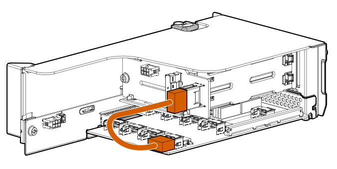
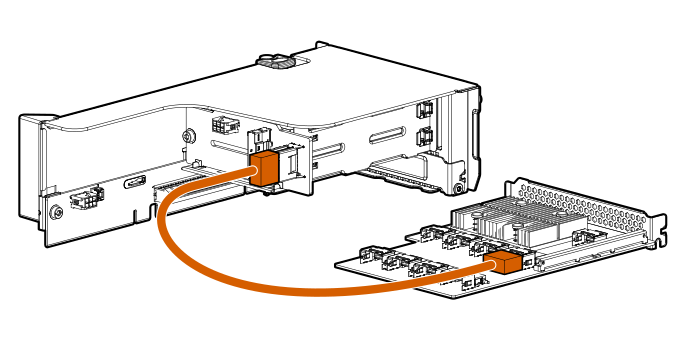
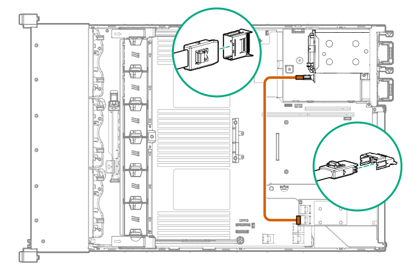

Cable routing: Rear 2SFF drive options
Rear 2SFF drive option to a SAS expander, both in the primary slot

Rear 2SFF drive option in the secondary slot to a SAS Expander in primary slot

Rear 2SFF drive option above the power supplies to a controller
